I turn complex technical capability into tools people can
actually use — for developers, for security teams, and for musicians.
Master of Software Engineering at Carnegie Mellon University's School of
Computer Science, 2026–2028. Before that, seven years building enterprise
developer and software security tooling in Beijing. Currently looking for a
Summer 2027 software engineering internship.
One thread runs through all of it: take a capability that is hard to use
directly — an analysis engine, a screen, an audio buffer, a Markov model —
and put it behind controls somebody will actually reach for.
Click any card for the full write-up.
~100 msend-to-end latencySoftware & Systems
2023
Drive a desktop from any device on the house network through a browser —
nothing to install, ~100 ms of latency, and about twenty per-game key
layouts. Four small services instead of one binary, because packaging means
a platform matrix.
ReactNode.jsWebSocketJavaffmpeg
Read the write-up →
local LLMinside the loopSoftware & Systems
2026 – now
Most tools store people and stop at the introduction. This one models the
relationship itself — what state it is in and what it needs next — with a
locally hosted language model working inside that loop.
ReactTypeScriptNode.jsDrizzle ORMSQLiteLocal LLM
Read the write-up →
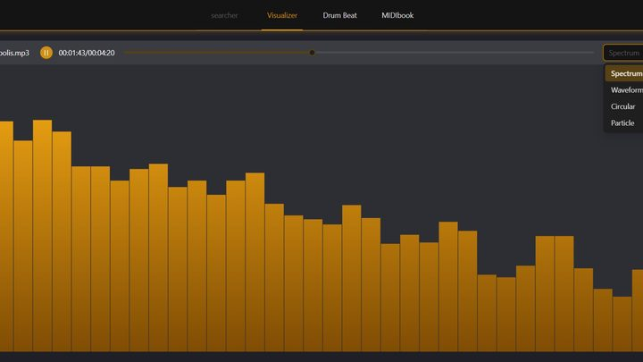
Software & Systems
Platform
The platform the music-technology tools live in: one browser-based home for
the visualizer, the beat generator and MIDIbook, so none of them need an
install or a desktop DAW to try.
ReactTypeScriptViteAnt DesignNode.jsSQLite
Read the write-up →
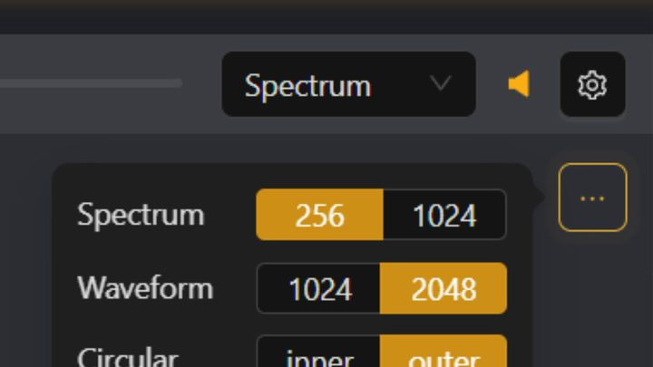
Music Technology
Aeon Cymatic
Real-time spectrum and waveform rendering on HTML Canvas, with several
configurable visual modes and a cursor-driven particle field.
Web Audio APICanvasReactTypeScript
Read the write-up →
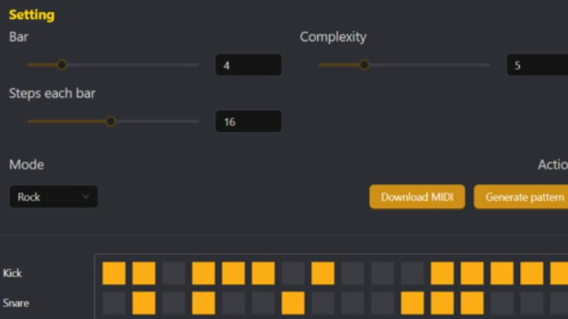
Music Technology
Aeon Cymatic
A testbed for probabilistic pattern generation: set BPM, style, grid and
probability weights, listen, then export the result straight to MIDI.
ReactTypeScriptMIDI exportAnt Design
Read the write-up →
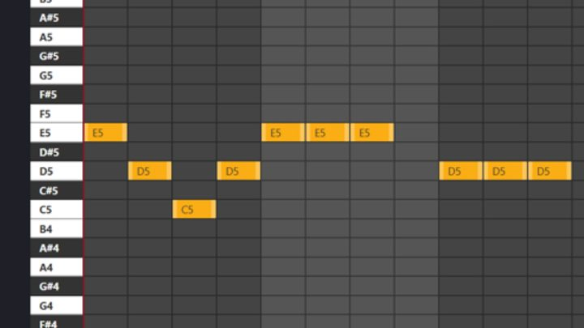
Music Technology
Aeon Cymatic
A digital sketchbook for music: a stripped-down piano roll for catching an
idea before it evaporates, with notes persisted server-side so the sketch is
on whichever device you pick up next.
ReactTypeScriptNode.jsSQLite
Read the write-up →
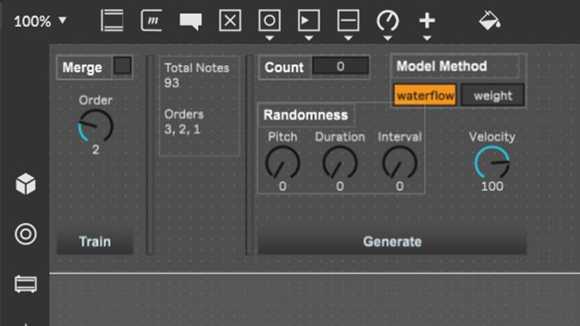
Music Technology
Max for Live
An Ableton device that trains a variable-order Markov model on the clips
already in your session, then writes suggested notes back into the clip you
have selected — context-aware, not generic.
Max for LiveJavaScriptAbleton Live APIMarkov chains
Read the write-up →
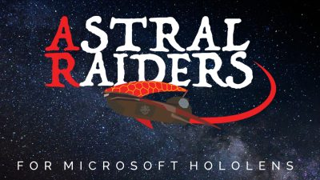
Games
2017
Senior design project: an augmented-reality tower defence for Microsoft
HoloLens, where the room you are standing in becomes the battlefield.
UnityC#HoloLensAR
Read the write-up →
Games
Team project
A Halloween 2D platformer built in Unity — three levels and a boss run,
where killing an enemy and picking up its head grants you its ability.
UnityC#2D platformer
Read the write-up →
Music
Ableton Live
Electronic and orchestral hybrid. A research vessel leaves for an unknown
star system; nobody knows what it will find on the other side.
CompositionSound designMixing
Listen and read →
Music
Ableton Live
A symphonic attempt about the trip rather than the destination — what the
striving does to you on the way to somewhere that matters.
CompositionOrchestrationMixing
Listen and read →
Music
Ableton Live
Started as a technical experiment in mix control and instrument
coordination, and turned into a city floating in the clouds.
CompositionMix engineeringSidechain
Listen and read →
Nothing in this category yet.
Experience
The short version. Dates, scope and numbers are in the résumé.
Aug 2026 – May 2028
Carnegie Mellon University
Master of Software Engineering, School of Computer Science
Pittsburgh, PA
Coursework in machine learning in production, formal methods and requirements
engineering, alongside a two-semester industry studio capstone.
May 2019 – Aug 2026
Peking University Software Engineering Co., Ltd
Front-end Lead (2021–2026) · Frontend Developer (2019–2021)
Beijing, China
Product engineering for enterprise software security tooling — static analysis,
software composition analysis and supply chain monitoring. Led frontend for a
three-person team inside a roughly 25-person cross-functional product group, and
over time took on requirements and product definition for two zero-to-one
platforms while continuing to own frontend delivery.
Jan – Sep 2018
CG Max Design Corp
Web Software Developer
Remote (Philadelphia, PA)
Website and internal tooling work during a platform migration.
Sep 2013 – Sep 2017
Drexel University
B.S. in Computer Science
Philadelphia, PA
Including two co-op placements through the Drexel co-op program: Web Developer at
MODWorldWide, and Frontend Development Assistant at Scandura.
I am a software engineer. For seven years I built the layer of enterprise security
tooling that people actually touch — static analysis, software composition analysis,
supply chain monitoring — which in practice meant translating what an analysis engine
can do into something a developer, a security team or an engineering director can
configure and act on. The hard problem in that domain is not detection.
It is noise: a scanner that cries wolf gets switched off, and a switched-off scanner
detects nothing at all.
That work pulled me steadily upstream. Making the frontend fast and low-coupling
freed up capacity; the capacity turned into requirements work, then module design,
then product ownership of two zero-to-one platforms — while I kept owning frontend
delivery the whole time. What I learned along the way is that a product decision is
usually an architecture decision wearing a different hat. You cannot design an
interactive call graph for a multi-user web application without first deciding how
graph data gets cached, persisted and modelled.
Music is the other place I do this. I compose in Ableton Live, and
the tools I build for it — a real-time visualizer, a probabilistic beat generator, a
piano-roll sketchpad, a Markov-chain melody generator that learns from the clips
already in your session — are the same exercise pointed at a different user: take
something technically dense, an FFT buffer or a variable-order Markov model, and put
it behind controls a musician will reach for mid-idea. Being the demanding user of my
own tools has done more for my judgement about interaction design than reading about
it ever did.
I came back to school because I wanted to look at the abstractions underneath the
code again, and because AI is changing what this job is. I am extending from the
interface layer out to end-to-end software engineering, and I am looking for a
Summer 2027 internship where that extension happens on a real team.
Currently
StudyingMSE, Carnegie Mellon School of Computer Science — Pittsburgh, PA
Personal project · 2023 · designed, built and used daily at home
ReactNode.jsWebSocketJavaffmpeg
Why build it
I wanted to lie in bed and drive my desktop from an iPad. Every off-the-shelf option
routes traffic through the public internet even when both machines are sitting on the
same home network, which is the wrong shape for the problem — and it puts a floor under
the latency that no amount of tuning gets you past.
Constraints, fixed before any code
Zero install, any platform. Open it and use it. No per-OS build for macOS, Windows, Linux, iPad and phone.
Latency low enough to play on. Not "usable for a spreadsheet" — low enough that input feels attached to the screen.
Deep input remapping. Different games want completely different control surfaces on a touchscreen.
What I ruled out, and why
Consumer remote-control tools. They round-trip through the public internet, require an account and a client install, and cannot get the latency down.
OBS as the streaming layer. I measured it: about 300 ms at best. Fine for broadcast, unusable for control.
Steam Remote Play. Genuinely good technology, but the configuration surface does not go far enough for what I wanted to remap.
The architecture decision
I picked a browser–server architecture, and the reason is narrower than "the web is
convenient": every other architecture requires packaging, and packaging means a
platform matrix. A native client is one build per operating system, forever, and I
am one person. Anything that runs at home already has a browser, so the browser is the
compatibility layer I did not have to write.
Four services
Service
Built with
Responsibility
Client
React
What the browser connects to; also hosts the key-mapping configuration UI
Streaming
Node.js + WebSocket
Pushes the video stream to the client and carries the control channel
Control
Java
Receives input events and drives the machine through java.awt.Robot
Capture
ffmpeg
Screen capture and the actual video source
They are deliberately not bundled into one binary. A single launcher script brings all
four up, and any device on the network connects by IP.
Results
About 100 ms end to end, against the 300 ms I measured out of OBS. Everything short of very high-input-rate games is playable.
Around 20 key-mapping profiles built up over time — fighting-game layouts, RPG-Maker-style layouts with a D-pad on one side and Z/X/Ctrl on the other, and profiles that translate touch gestures into mouse movement and clicks.
Where it stops
I tried pushing it beyond the LAN once, onto a public server with a VPN standing in for
the local network. That quietly converts the whole thing into a public streaming problem,
and I never did the streaming robustness work it demands: stall recovery, buffer sizing,
read-chunk tuning, clock correction. Jitter can cascade into a hard stall, and the only
mitigation today is a "reconnect stream" button in the client. On a LAN none of this
shows up, so once the requirement was met I stopped — which is a real limit of the
project rather than a rough edge I am about to polish.
Relationship Management System
Personal project · 2026 – present · in active development
Nearly every tool in this space manages people. It stores a name, a title, a
company, maybe where you met, and then it stops at the introduction. None of them model
the thing that actually decides whether a professional relationship survives: what state
it is in right now, and what it needs next.
So that is what this system models — people, the interaction history behind them,
the stage a relationship has reached, and the next action it is waiting on. Contact
storage is the substrate, not the product.
Where the model fits
A locally hosted language model is wired into that loop as a component rather than
bolted on as a chat box. It parses profiles captured by a browser userscript, normalises
them into the same schema as everything else, and drafts contextual outreach against the
relationship's actual history. Model calls run asynchronously so a slow generation never
sits in the request path.
Hosting the model locally is a product decision, not a hobbyist one. Who you
know, what you said, and how a conversation actually went is among the most sensitive
data a person keeps. It should not have to leave the machine in order to be useful.
How it is built
Client — React, TypeScript and Vite.
Server — Node.js with Drizzle ORM over SQLite; the schema is the centre of the design, covering people, touchpoints, relationship stages and next actions.
Capture — a browser userscript that pulls profile data and normalises it into that same schema, so imported records are first-class rather than a separate pile.
Status
Under active development, and honest about it: the interesting part right now is the
modelling and the local-model integration rather than polish. Application tracking is
the next thing planned.
Aeon Cymatic
Self-hosted web platform for music-technology tools
Aeon Cymatic is the platform the music-technology experiments live in. Rather than three
separate downloads or three DAW plugins, it is one browser-based application with the
visualizer, the drum beat generator and MIDIbook behind a shared shell, account and
navigation.
The point of the browser–server architecture here is the same as everywhere else in my
work: the tools are only worth building if somebody can reach them without installing
anything. A musician trying out a beat generator will not first install a runtime.
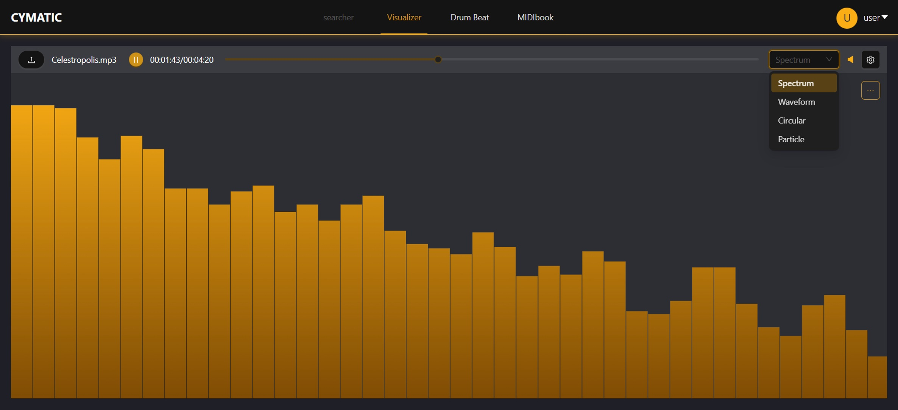
The shared shell, with the visualizer, drum beat and MIDIbook tools behind one navigation bar.
How it is built
Front end — Vite, TypeScript, React and Ant Design.
Back end — Node.js with SQLite, providing a lightweight database and API for the parts that need to persist, such as MIDIbook's note data.
Deployment — self-hosted, so it is reachable from any device on the network without an install step.
The tools inside it
Audio Visualizer — real-time spectrum and waveform rendering with configurable modes and an interactive particle field.
Drum Beat Generator — probabilistic pattern generation with MIDI export.
MIDIbook — a piano-roll sketchpad with server-side persistence.
Each has its own write-up under Music Technology.
Audio Visualizer
Canvas-based audio visualizer with custom playback controls · part of Aeon Cymatic
An audio visualization tool that experiments with real-time visual representations of sound. It parses audio data and renders it on HTML Canvas as a spectrum analyser and a waveform.
Several visualization modes, each configurable — plus a prototype for using mouse movement to influence the visualization as it runs.
A small custom audio player, so playback and the canvas stay synchronised instead of drifting apart.
Technology & architecture
Built on a browser–server architecture for easy, cross-platform access, and integrated
into the Aeon Cymatic platform. Vite + TypeScript + React + Ant Design.
Screens
Audio visualizer with playback controls and multiple visualization modes.
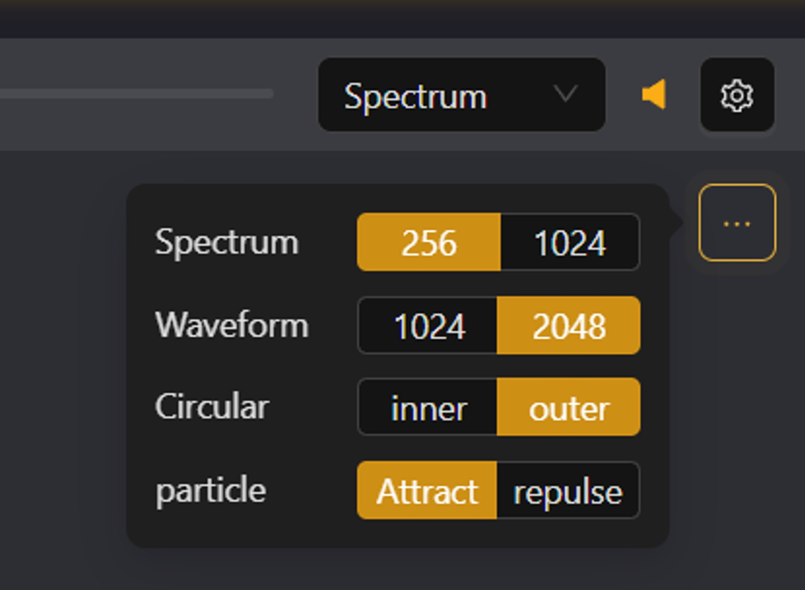
Adjustable settings that modify the graph's visual output.
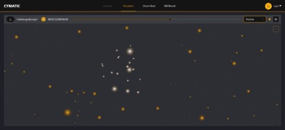
Interactive particle effects triggered by cursor movement.
Drum Beat Generator
A configurable drum machine with stochastic beat generation · part of Aeon Cymatic
A beat generator built to test random and probabilistic algorithms for creating drum patterns. Users set BPM, style, rhythm pattern and probability parameters.
Generated sequences export directly as MIDI files. Pitch values in the export are currently fixed; a later version should let each drum voice specify its own.
Different rhythmic styles come out of configurable weights and generation strategies, though finer style customisation is not there yet.
Technology & architecture
Browser–server architecture for easy, cross-platform access, integrated into the Aeon
Cymatic platform. Vite + TypeScript + React + Ant Design.
Screens
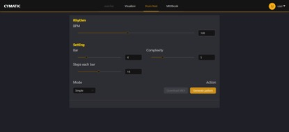
Drum beat generator with customizable parameters.
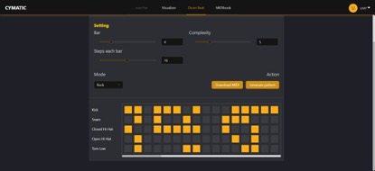
Generated beat patterns available for viewing and download.
MIDIbook
A digital sketchbook for music · part of Aeon Cymatic
A simplified, DAW-like MIDI editing tool — a piano roll for quickly sketching a musical idea before it disappears.
Basic preview through audio synthesis. It currently uses a simple synthesiser with three basic voices rather than a sampled piano, to keep server resource use down; the sounds can be refined later.
Note data persists in a SQLite database on the back end. Notes are restricted to a fixed grid today; flexible start times and lengths are the planned next step.
Technology & architecture
Browser–server architecture for easy, cross-platform access, integrated into the Aeon
Cymatic platform. Vite + TypeScript + React + Ant Design on the front end; Node.js +
SQLite behind it for the database and API.
Screens
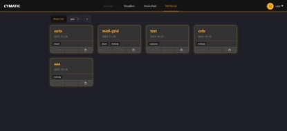
MIDI notebook system for storing experimental melody data.
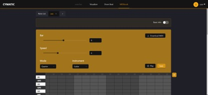
Custom settings interface for the notebook.
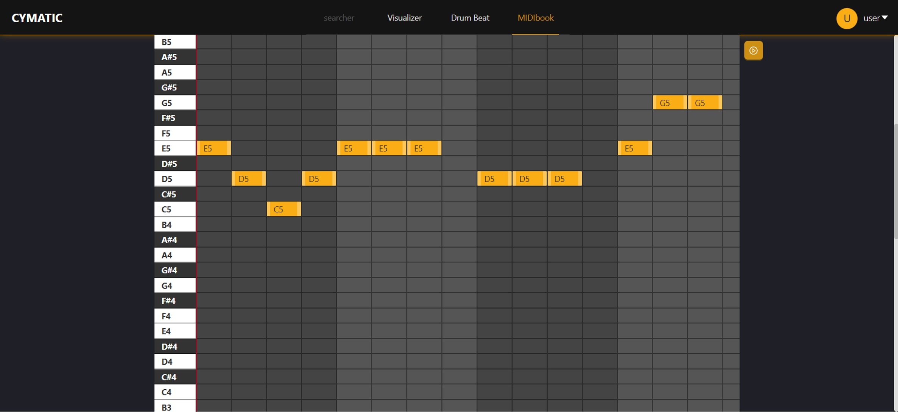
Piano roll with basic MIDI clip editing capabilities.
Markov Melody Generator
A Max for Live device that generates melody from the clips already in your session
Max for LiveJavaScriptAbleton Live APIMarkov chains
Core functionality & purpose
The plugin implements a Markov chain model as a melody generator: it learns from existing
MIDI clips in the current Ableton project, folds them into the model, and then uses the
model to predict and generate new melodic suggestions.
That makes the suggestions context-aware rather than generic. It can produce supporting
melodic material in the style of a clip you already wrote, or serve as a source of core
melodic inspiration — a way to test and validate an idea quickly instead of staring at an
empty piano roll.
Technology & architecture
Implemented as a Max for Live device for Ableton Live 11. The core logic is written in
JavaScript, using the Max js object to handle data, manage the Markov model
and process MIDI information.
Training
The model's order is configurable, up to 6th order, allowing deeper context in what it learns.
The same MIDI clip can be trained multiple times, at different orders, to refine the model.
Two training modes: overwrite clears the existing model and retrains from scratch, while merge keeps existing Markov data and accumulates the new training data into the same map.
Generation
Notes are written into a clip in real time according to the configured model, without deleting the notes already there. The number of new notes is a parameter.
A randomness ratio decides how strictly generation follows the learned model — a higher ratio buys creative divergence at the cost of coherence.
There is more than one sensible way to search a multi-order model, so the device offers several strategies; a waterfall strategy and a weighted-ratio strategy are implemented.
Generation targets the currently selected MIDI clip. Through the Ableton Live API the device reads that clip and appends new notes after its last existing note.
Screens
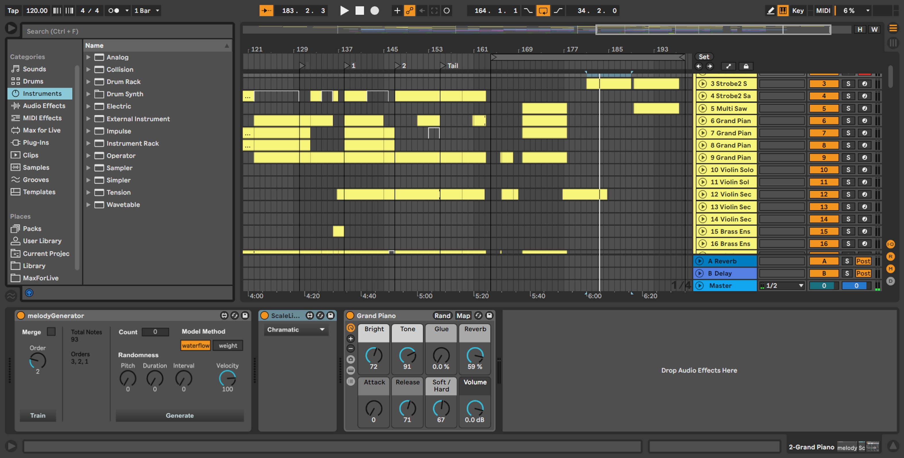
The Max for Live device loaded into a MIDI track (bottom-left corner).
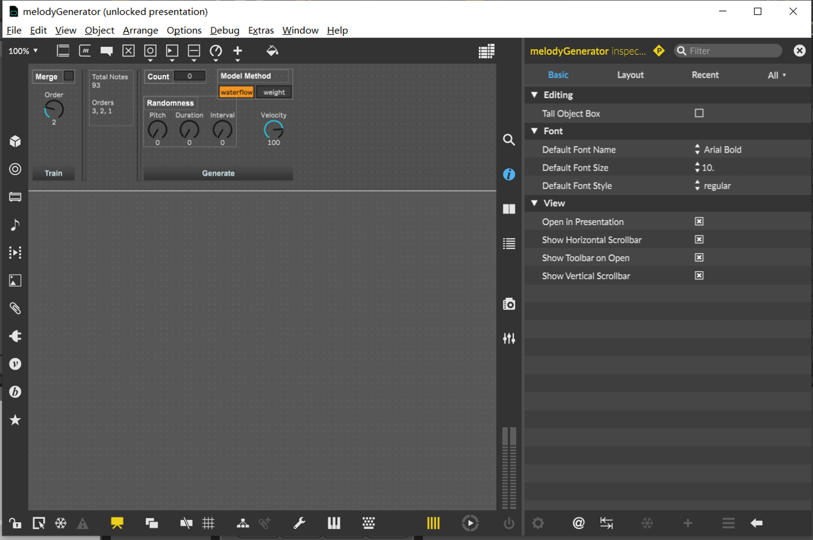
Max interface in presentation mode.
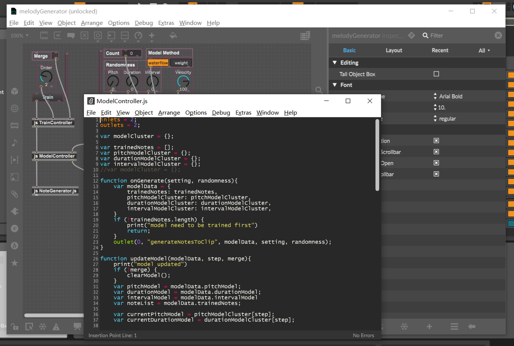
A custom JS node containing the model controller code.
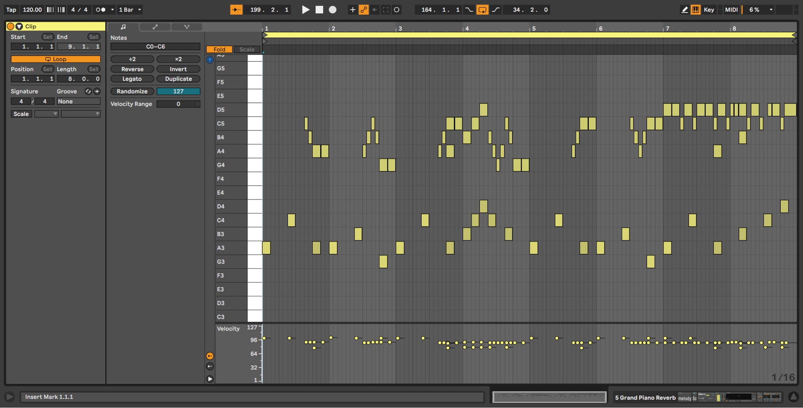
Trained on MIDI clips containing existing musical notes.
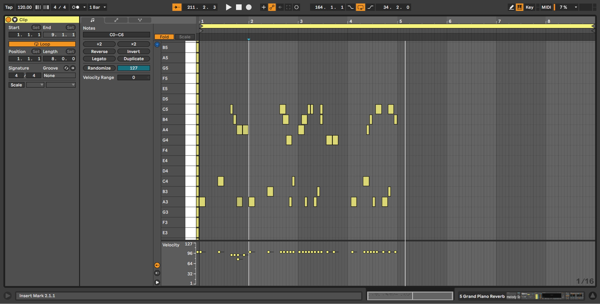
Generates a predicted note.
Astral Raiders
Senior design project · an AR action tower defence for Microsoft HoloLens
UnityC#HoloLensAugmented reality
The game
Astral Raiders is an action tower defence game for the Microsoft HoloLens — an augmented
reality game built to give players an experience a flat screen cannot.
A small spacecraft crashes into the player's room, and the ship's captain explains that
he is being followed by space pirates. The player collects items from around the room —
the real room — and builds defensive structures to hold off the incoming enemies. Killed
enemies may drop loot, including new objects to collect.
The game is developed with Unity.
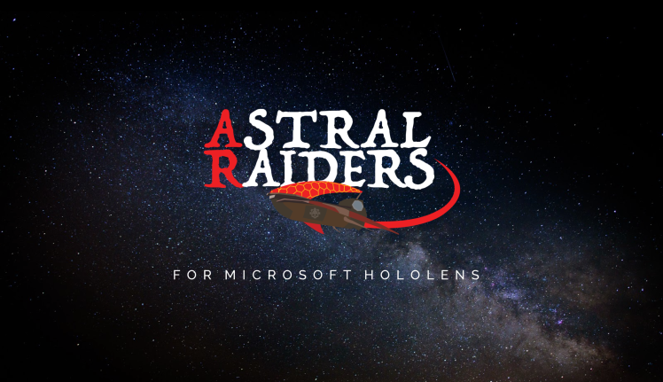
Home screen.
Gameplay capture. It is a large animated GIF, so it loads only on request.
Spooky
2D platformer, made with Unity · team project
UnityC#2D platformer
The game
A 2D platformer built in Unity for Halloween: three levels and a final boss run. Killing
an enemy and picking up its head grants the player that enemy's special ability, so the
moveset you finish a level with is the one you assembled on the way through it.
The initial idea came from a science-fiction narrative: in the year 2200 humans have
achieved faster-than-light travel, and an advanced research vessel sets out to explore
unknown star systems. The exploration of the unknown, and the wonder of the night sky,
have long been among my favourite creative themes. It is not rooted in any real-world
setting, yet it is not about magic or the supernatural either. Planets, stars, gravity,
nebulae, black holes, galaxies — to us they look like a still, eternal backdrop. But what
appears static and slow-moving harbours immense energy, and the act of exploring it brings
infinite possibilities, and a chance to uncover the nature of existence.
Scientific exploration is far from dull. Quite the opposite: when we take our first steps
under a vast sky, when we set foot on another body entirely, those are humanity's boldest
and most determined footsteps. And they are not an end point — they are the launchpad for
the next attempt. That courage, and the mix of wonder and unease that comes with facing
the unknown, is what I wanted this piece to carry.
A research ship carrying the best scientists of humanity has set off — no one knows what
they will discover on the other side. Let us wish them luck.
Techniques
Platform — Ableton Live as the primary environment for composition and production.
Sound sources — electronic sounds and bass mainly from Strobe; percussion sampled largely from Kontakt's Damaged Drum Kit; other orchestral elements from Ableton's built-in instruments and expansion packs.
Processing & effects — EQ, reverb, utility, compression and others, with automation on effect parameters so the sound evolves over time.
Inside the project
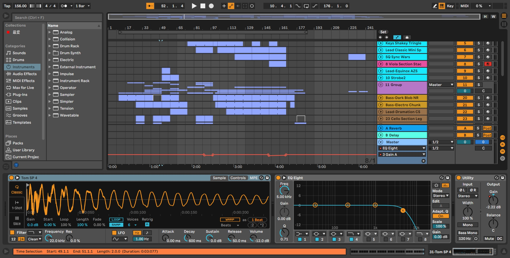
Overview of selected tracks in the MIDI arrangement.
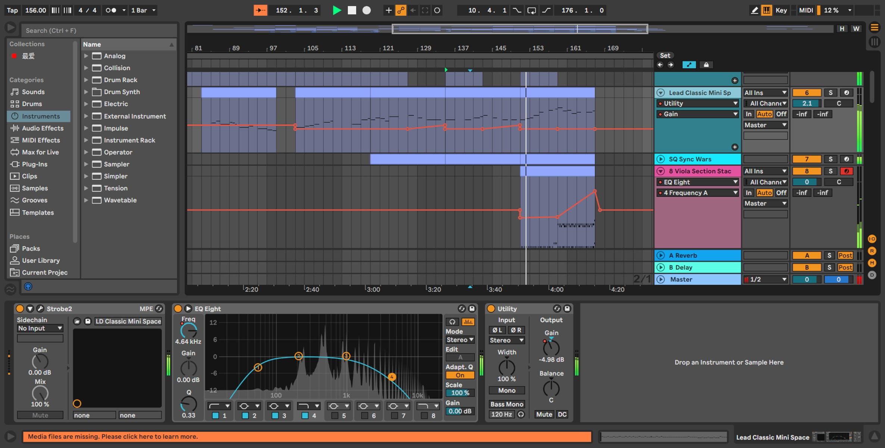
EQ Eight and Utility automation following the musical rhythm.
Journey to Citadel is an attempt at a somewhat symphonic style. At its core the piece is
about a journey — not a leisurely trip, but a purposeful, difficult, abstract voyage. The
scenery along the way is not merely beautiful; it stands for the changing experience of
travelling. I wrote the piece around joy, transformation and perseverance.
"Citadel" may be a concrete place or a symbolic destination. In my mind it is a fortress —
not a typical castle, but a spiritual sanctuary, a home world, a refuge; something deeply
significant to many people. For some it is a home, for others a bustling city, for others
still a symbol of what they are chasing. Everyone has a reason to reach it. The question I
was asking was how to express the significance of such a place in music, and my answer is
that the journey toward it is what gives the destination meaning. The struggle, the growth,
the striving on the way — that is what this piece is trying to convey.
Techniques
Platform — Ableton Live as the primary environment for composition and production.
Celestropolis grew out of an earlier project I called FIN. I was dissatisfied with parts
of FIN — the mixing, and the way the instruments interacted — and I wanted to try better
arranging technique. After analysing its shortcomings I started a new musical experiment
to validate the ideas I had taken from that analysis, and Celestropolis is the result. Its
original purpose was technical experimentation rather than conceptual expression: refining
mix control, improving instrument coordination, handling transitions more smoothly.
As the work progressed a larger vision emerged — the sky. Because the piece started from
technical experimentation, its reading of "sky" is not the serene blue expanse; it is
something more complex and more fantastical. Over time a city in the sky materialised in
my imagination, an intricately woven blueprint of architecture floating among the clouds.
Celestropolis is, to me, the fusion of technique and imagination — a sky city standing in
for wonder and the unimaginable, and the core the music was shaped around.
Techniques
Platform — Ableton Live as the primary environment for composition and production.
Sound sources — primarily Ableton's built-in orchestral instruments and expansion packs, with additional sounds from Strobe and Heavyocity.
Processing & effects — EQ, reverb, utility, compression and others, with automation on effect parameters so the sound evolves over time.
Inside the project
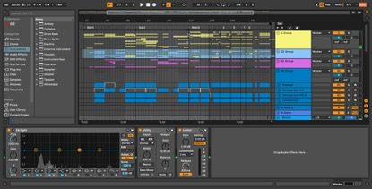
Overview of main tracks in the MIDI arrangement.
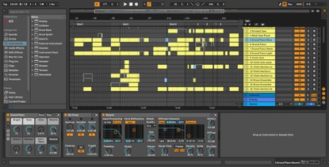
Expanded view of the melodic track group.
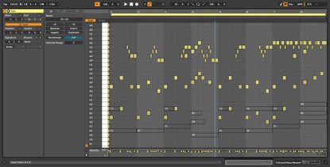
Note content of the piano MIDI clip.
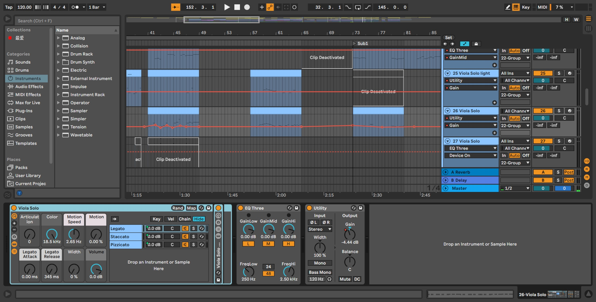
EQ Three and Utility automation following the musical rhythm.
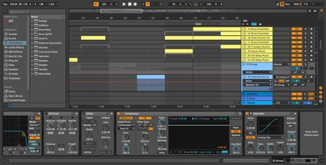
Tracks processed with a sidechain compressor, with Saturator applied as a modifier.